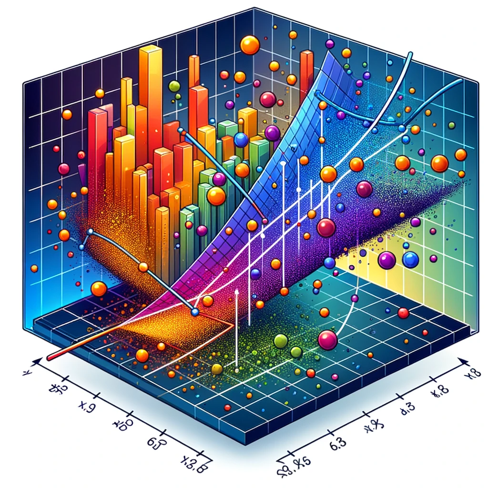
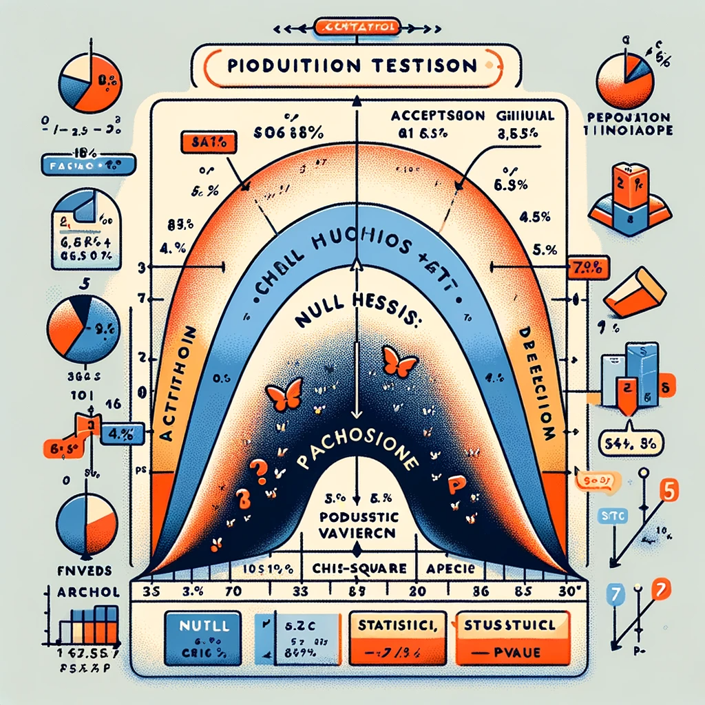
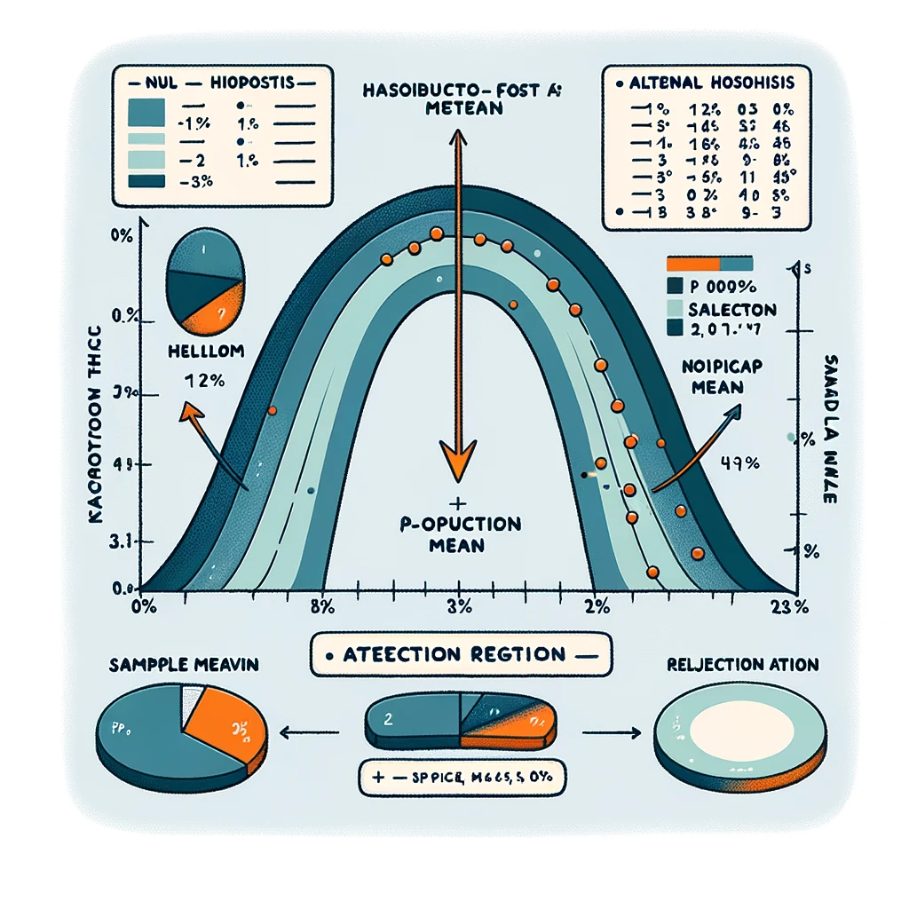
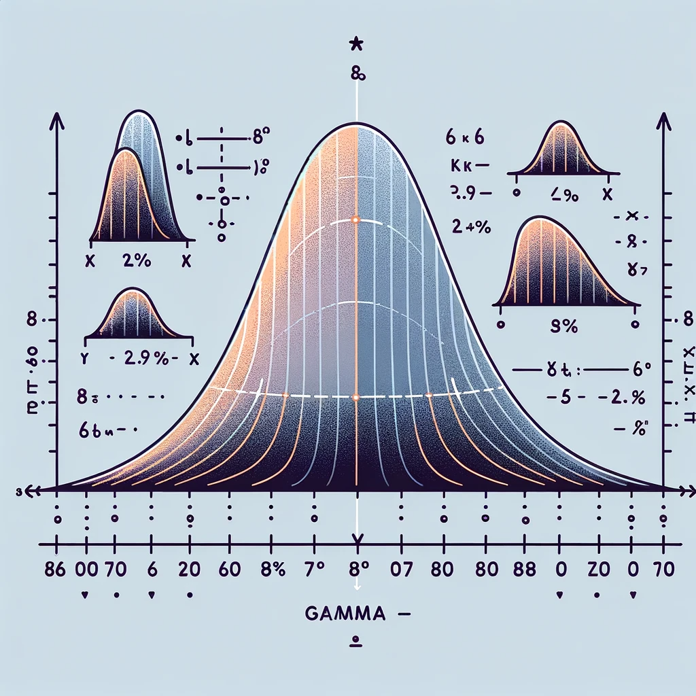
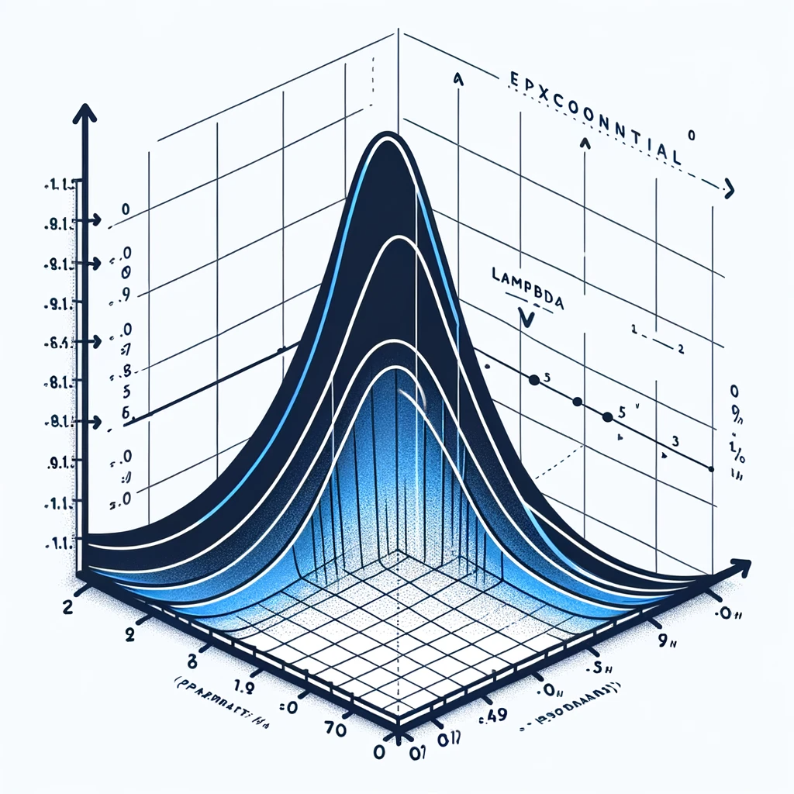
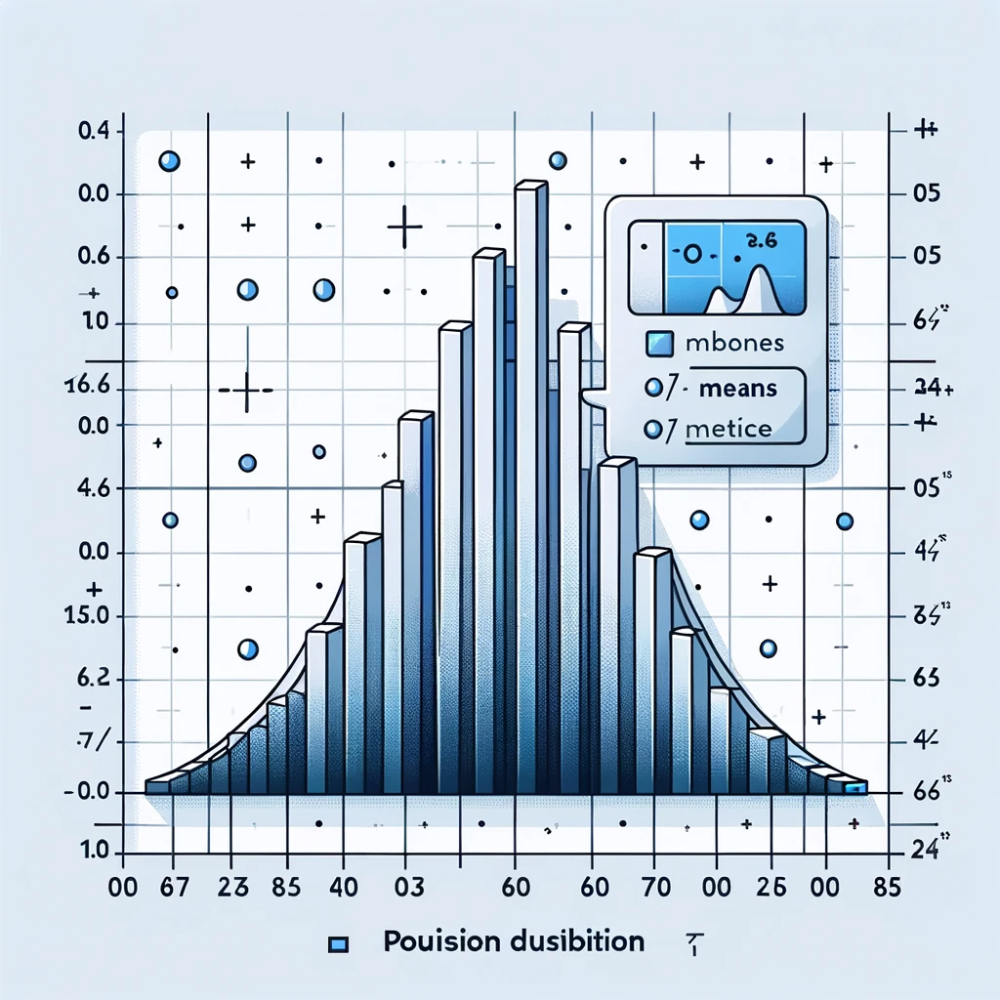
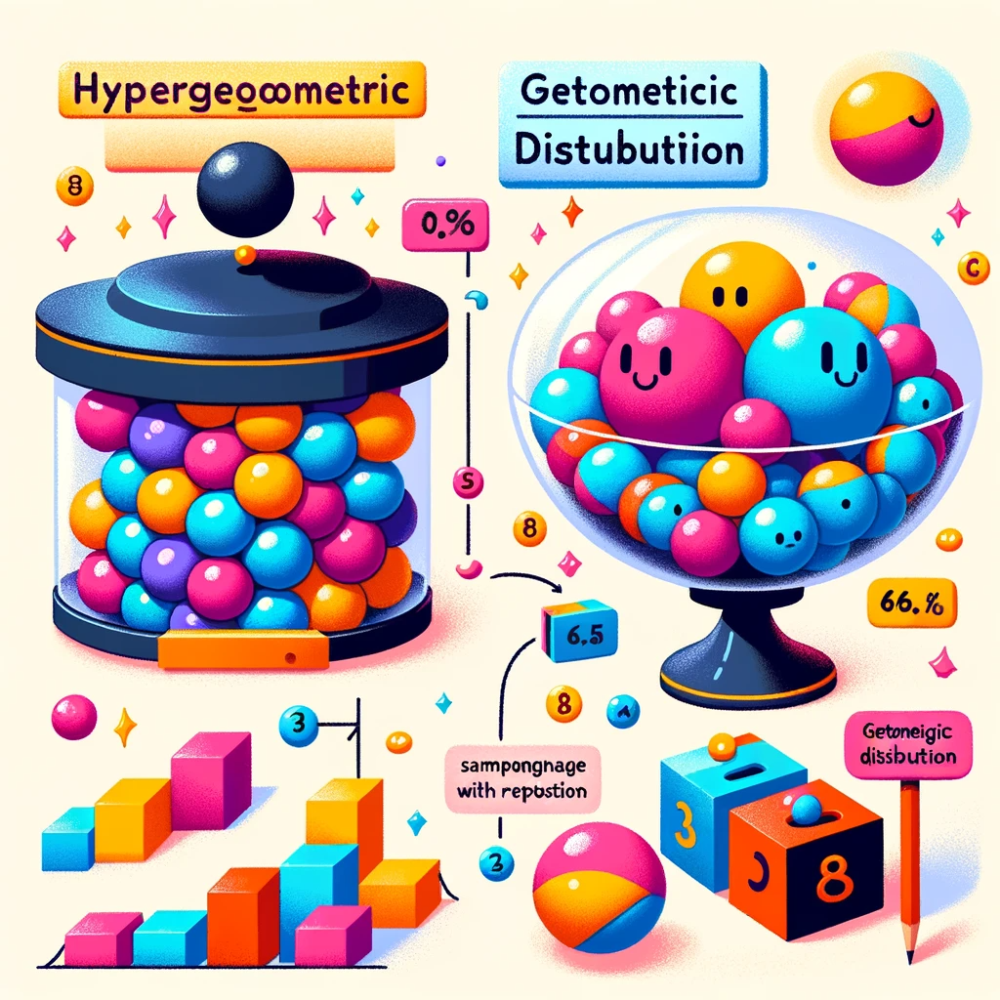
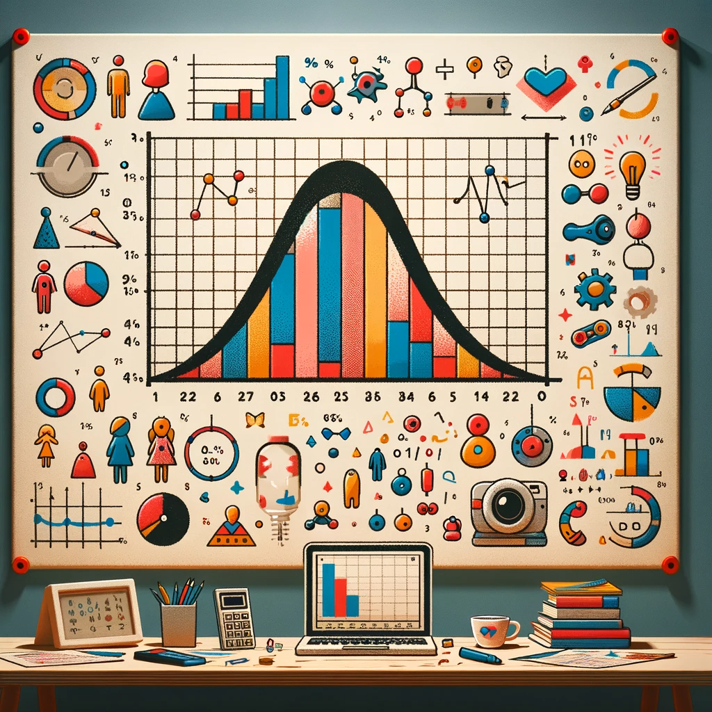
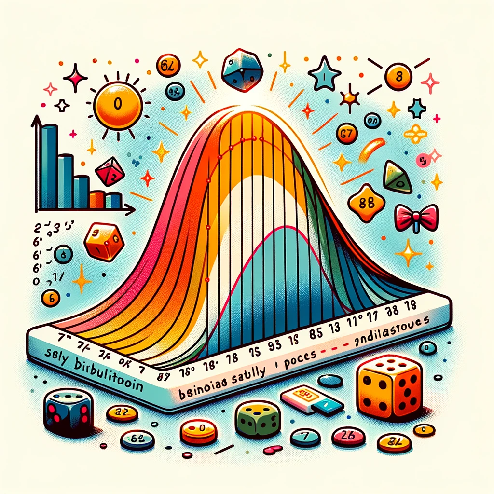

확률과 통계(2024)
소개
Web-R
Link
JS_Land 수업자료실
Categories
All
(15)
Statistics
(15)
교재 3장
(1)
교재 4장
(2)
교재 5장
(2)
교재 6장
(3)
교재 7장
(2)
교재 8장
(2)
교재 9장
(4)
15. 로지스틱회귀분석
Statistics
교재 9장
로지스틱 회귀분석
(logistic regression)은 독립변수의 선형 결합을 이용하여 사건의 발생 가능성을 예측하는데 사용되는 통계기법으로 설명변수
(독립변수, X)
와 범주형 목표변수
(종속변수, Y)
간의 관계를 모형화하여 목표변수를 분석하거나 분류하는 통계적 방법론이다. 로지스틱 회귀분석을 활용한…
Feb 6, 2024
Kim Jae Sook

14. 다중선형회귀분석
Statistics
교재 9장
국민총생산에 영향을 주는 것이 이자율 이외에 수출, 수입, R&D비율, 실업률 등 여러가지일 수 있다. 몸무게를 설명할 수 있는 변수가 키뿐 아니라 하루 칼로리 섭취량과 운동량도 영향을 줄 것이라고 생각한다면 키, 칼로리 섭취량과 운동량을 동시에 고려하여 선형회귀분석을 시도할 수 있다. 이와 같이 둘 이상의…
Feb 5, 2024
Kim Jae Sook
13. 분산분석
Statistics
교재 9장
분산분석(analysis of variance, ANOVA)
은 분산을 분석하기 때문에 지어진 이름이지만 그 목적은 평균을 분석하는 것이다. 여러 집단의 평균이 같은지, 아니면 하나라도 평균이 다른 집단이 있는지 판단하려는 것이 목적이다.
Feb 4, 2024
Kim Jae Sook
12. 카이제곱검정
Statistics
교재 9장
날씨가 맑고, 흐리고, 눈 오고, 비 오고 등으로 조사되고, 직업이 전문직, 사무직, 노무직 등으로 분류되는 등 숫자가 아닌 범주형 형태로 얻어지는 자료를 분석하는 기본적인 도구로 카이제곱통계를 이용한다. 표본으로 얻어진 범주의 분포들이 주어진 분포에 부합하는지 알아보려는
적합도 검정
, 범주형 변수들끼리의…
Feb 3, 2024
Kim Jae Sook

11. 하나의 모집단에 대한 가설검정(분산)
Statistics
교재 8장
하나의 모집단에 대한 가설검정(분산)
(sasa메일로 로그인해야 내용을 볼 수 있습니다.)
Feb 2, 2024
Kim Jae Sook

10. 하나의 모집단에 대한 가설검정(평균)
Statistics
교재 8장
하나의 모집단에 대한 가설검정(평균)
(sasa메일로 로그인해야 내용을 볼 수 있습니다.)
Feb 1, 2024
Kim Jae Sook
09. 모비율과 표본비율, 모비율의 추정
Statistics
교재 7장
평균이 일반적인 자료들의 대푯값이라면, 표본비율은
\(0\)
과 $14로 된 특수한 자료의 평균이다. 즉 비율은 평균의 개념과 같다. 따라서 모비율의 구간추정은 모평균의 구간추정방법과 거의 동일하다. 모비율
\(p\)
를 추정하기 위하여
\(n\)
개의 표본을 추출하여 조사한 결과, ’성공’의 수가
\(X\)
라면…
Jan 31, 2024
Kim Jae Sook
08. 모집단과 표본, 모평균의 추정
Statistics
교재 7장
중심극한정리
에 의하면 표본평균
\(\bar{X}\)
의 분포는 이론적으로 평균이
\(\mu=\frac{0+2}{2}=1\)
, 분산이
\(\frac{\sigma^2}{n}=\frac{(2-0)^2}{12}\times\frac{1}{5}=\frac{1}{15}=0.06667\)
이다. 계산된 요약 통계량을 보면…
Jan 30, 2024
Kim Jae Sook

07. 감마분포
Statistics
교재 6장
위에 링크로 달아놓았지만, ChatGPT에게 감마분포에 관련된 r명령어를 묻고, 명령어는 알지만 더 자세한 사용법을 알고 싶을때는 프로그램에서 명령어에 커서를 두고
F1
을 누르면 설명이 나옵니다.
Jan 29, 2024
Kim Jae Sook

06. 지수분포
Statistics
교재 6장
위에 링크로 달아놓았지만, ChatGPT에게 지수분포에 관련된 r명령어를 묻고, 명령어는 알지만 더 자세한 사용법을 알고 싶을때는 프로그램에서 명령어에 커서를 두고
F1
을 누르면 설명이 나옵니다.
Jan 28, 2024
Kim Jae Sook

05. 포아송분포, 균등분포
Statistics
교재 5장
교재 6장
포아송분포, 균등분포
(sasa메일로 로그인해야 내용을 볼 수 있습니다.)
Jan 27, 2024
Kim Jae Sook

04. 초기하분포, 기하분포
Statistics
교재 5장
초기하분포, 기하분포
(sasa메일로 로그인해야 내용을 볼 수 있습니다.)
Jan 26, 2024
Kim Jae Sook

03. 연속확률변수, 정규분포
Statistics
교재 4장
대표적인 연속확률분포를 간단히 정리하면 다음과 같다.
Jan 25, 2024
Kim Jae Sook

02. 이산확률변수, 이항분포
Statistics
교재 4장
대표적인 이산확률분포를 간단히 정리하면 다음과 같다.
Jan 24, 2024
Kim Jae Sook
01. 기술통계(Descriptive Statistics)
Statistics
교재 3장
R 프로그램을 사용하는 방법을 배워봅시다.
오른쪽 위 Link를 클릭하여 프로그램 설치안내를 읽고, 프로그램을 설치하세요.
R 프로그램을 더 공부하고 싶은 학생은 아래 사이트를 참고하세요.
- 데이터 사이언스를 위한 R 프로그래밍
Jan 23, 2024
Kim Jae Sook
No matching items